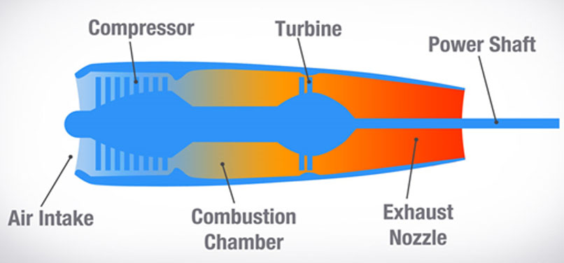

Types of engine
-
Turboprop Engine
Fuel is then added to the compressed air in the combustor, where the fuel-air mixture then combusts.
It is basically similar to a turbojet except that an added turbine, rearward of the combustion chamber, works through a shaft and speed-reducing gears to turn a propeller at the front of the engine. They are not as efficient as jet engines for high altitude long distance flights
The turboprop engine is a turbojet engine that uses a gearing system to connect to the aircraft propeller. The gearbox of an aircraft comes with a turbojet that spins the shaft attached to it.
A turboprop engine is a variant of a jet engine that has been optimised to drive a propeller. Turboprop equipped aircraft are very efficient at lower flight speeds (less than mach 0.6), burning less fuel per seat-mile and requiring significantly less runway for takeoff and landing than a turbojet or turbofan powered aircraft of the same size. When the aircraft is used over relatively short distances, these cost and performance benefits offset the lower speed making turboprops the engine of choice for most commuter aircraft.
A turboprop engine uses the same principles as a turbojet to produce energy, that is, it incorporates a compressor, combustor and turbine within the gas generator of the engine. The primary difference between the turboprop and the turbojet is that additional turbines, a power shaft and a reduction gearbox have been incorporated into the design to drive the propeller.The gearbox may be driven by the same turbines and shaft that drive the engine compressor, mechanically linking the propeller and the engine, or the turbines may be separate with the power turbine driving a concentric, mechanically isolated shaft to power the gearbox. The latter design is referred to as a "free power turbine" or, more simply, a "free turbine" engine. In either case, the turbines extract almost all of the energy from the exhaust stream using some of it to power the engine compressor and the rest to drive the propeller.
A turboprop engine is very similar to a turboshaft and many engines are available in both variants. The principal difference between the two is that the turboprop version must be designed to support the loads of the attached propeller whereas a turboshaft engine need not be as robust as it normally drives a transmission which is structurally supported by the vehicle and not by the engine itself.
Types of engine
-
Turbojet Engine
The turbojet sucks in air and compresses or squeezes it. The gases flow through the turbine and make it spin. These gases bounce back and shoot out of the rear of the exhaust, pushing the plane forward. A turbojet engine is a jet engine which produces all of its thrust by ejecting a high energy gas stream from the engine exhaust nozzle. In contrast to a turbofan or bypass engine, 100% of the air entering the intake of a turbojet engine goes through the engine core.
Turbojet engines had a significant impact on commercial aviation. Aside from giving faster flight speeds turbojets had greater reliability than piston engines, with some models demonstrating dispatch reliability rating in excess of 99.9%. Pre-jet commercial aircraft were designed with as many as four engines in part because of concerns over in-flight failures.
Overseas flight paths were plotted to keep planes within an hour of a landing field, lengthening flights. The increase in reliability that came with the turbojet enabled three- and two-engine designs, and more direct long-distance flights
Design
Air intake
The intake has to supply air to the engine with an acceptably small variation in pressure (known as distortion) and having lost as little energy as possible on the way (known as pressure recovery). The ram pressure rise in the intake is the inlet's contribution to the propulsion system's overall pressure ratio and thermal efficiency.
Compressor
The compressor is driven by the turbine.
It rotates at high speed, adding energy to the airflow and at the same time squeezing (compressing) it into a smaller space. Compressing the air increases its pressure and temperature.
Combustion chamber
The burning process in the combustor is significantly different from that in a piston engine. In a piston engine, the burning gases are confined to a small volume, and as the fuel burns, the pressure increases.
In a turbojet, the air and fuel mixture burn in the combustor and pass through to the turbine in a continuous flowing process with no pressure build-up. Instead, a small pressure loss occurs in the combustor.
Types of engine
-
Turboshaft Engine
Turboshaft engines are designed in a way that makes the speed of a helicopter rotor to rotate independently of the gas generator’s speed. That allows the speed of a helicopter rotor to remain constant even when the gas generator’s speed declines. It also modulates the power that a helicopter produces.

Turboshaft engines are used primarily for helicopters and auxiliary power units. A turboshaft engine is similar to a turboprop in principle, but in a turboprop the propeller is supported by the engine and the engine is bolted to the airframe: in a turboshaft, the engine does not provide any direct physical support to the helicopter's rotors. The rotor is connected to a transmission which is bolted to the airframe, and the turboshaft engine drives the transmission.
The distinction is seen by some as slim, as in some cases aircraft companies make both turboprop and turboshaft engines based on the same design.
A turboshaft engine is a form of gas turbine that is optimized to produce shaft power rather than jet thrust. In concept, turboshaft engines are very similar to turbojets, with additional turbine expansion to extract heat energy from the exhaust and convert it into output shaft power.
They are even more similar to turboprops, with only minor differences, and a single engine is often sold in both forms.
Turboshaft engines are commonly used in applications that require a sustained high power output, high reliability, small size, and light weight. These include helicopters, auxiliary power units, boats and ships, tanks, hovercraft, and stationary equipment.
The turboshaft engine is similar to a turbojet engine, but it has a large shaft that connects the front to the back. Since most of the turboshaft engines are used on helicopters, the shaft connects to the transmission of the rotor blade.
Types of engine
-
Turbofan Engine
Turbofan jet engines are powering most of todays airliners. All the air that enters the intake of a turbofan jet engine flows through the generator that produces the hot air. This generator comprises of a turbine, combustion chamber, and compressor. Only a small percentage of the air that passes through the turbofan engine reaches all the way to the combustion chamber.
Most modern airliners, troop, and cargo transports as well as military aircrafts use turbofan engines because of their high thrust and good fuel efficiency. As with other gas turbines, there is a core engine similar to a turbojet engine, which is surrounded by a fan in the front (or rear for aft turbofan engines) and an additional turbine at the rear.
The fan and fan turbine are composed of many blade rows and are connected to an additional shaft. As with the core compressor and turbine, some of the fan blades turn with the shaft and some blades remain stationary. The fan shaft passes through the core shaft for mechanical reasons
The turbofan or fanjet is a type of airbreathing jet engine that is widely used in aircraft propulsion.
The word "turbofan" is a portmanteau of "turbine" and "fan": the turbo portion refers to a gas turbine engine which achieves mechanical energy from combustion and the fan, a ducted fan that uses the mechanical energy from the gas turbine to force air rearwards.
Thus, whereas all the air taken in by a turbojet passes through the combustion chamber and turbines, in a turbofan some of that air bypasses these components. A turbofan thus can be thought of as a turbojet being used to drive a ducted fan, with both of these contributing to the thrust.
A turbofan engine is the most modern variation of the basic gas turbine engine. As with other gas turbines, there is a core engine, whose parts and operation are discussed on a separate page. In the turbofan engine, the core engine is surrounded by a fan in the front and an additional turbine at the rear. The fan and fan turbine are composed of many blades, like the core compressor and core turbine, and are connected to an additional shaft.
All of this additional turbomachinery is colored green on the schematic. As with the core compressor and turbine, some of the fan blades turn with the shaft and some blades remain stationary.
The fan shaft passes through the core shaft for mechanical reasons. This type of arrangement is called a two spool engine (one "spool" for the fan, one "spool" for the core.) Some advanced engines have additional spools for even higher efficiency.
An independent turbine attached to the front of the compressor usually drives the turbine at the same speed as the compressor. The air from the fan does not mix with the engine air, but it can be ducted back to mix with the air at the front of the engine. The exhaust gas produces less than 25% of the total thrust, while 75% comes from the attached fans.
Types of engine
-
Ramjet Engine
A ramjet is a variant of an air breathing jet engine that does not include a rotary compressor; rather, it uses the engine's forward motion to compress the incoming air. A ramjet cannot function at zero airspeed and therefore cannot be used to power an aircraft in all phases of flight. A ramjet equipped aircraft requires another type of propulsion to accelerate it to a speed at which the ramjet is capable of producing thrust.
A ramjet can theoretically be started at speeds as low as 100 knots but it does not start to produce any significant thrust until the airspeed reaches approximately mach 0.5. Even at this speed, efficiency is very low and peak efficiency will not be attained until reaching supersonic speeds in the realm of mach 3. Ramjet engines are limited to a maximum speed of about mach 6 due to the shockwave induced pressure loss which occurs when slowing the intake air to subsonic speed.
In its most basic form, a ramjet has very few moving parts and, because of this simplicity, is often referred to as a "flying stovepipe". The engine consists of an air intake, a combustor and an exhaust nozzle. A high speed object moving through the air generates a high pressure region in front of it.
The ramjet engine intake takes in high dynamic pressure air from this region and, using shockwaves created by the intake configuration, slows the air to subsonic speed before it enters the combustion chamber. In the combustor, fuel is mixed with the compressed air and ignited to reaccelerate the exhaust to supersonic speed. The exhaust gas is further accelerated as it exits the engine due to the geometric configuration of the exhaust nozzle.
These are the lightest types of engines in aircraft and come with no moving components. The speed of an aircraft is responsible for forcing air into the engine. Ramjet operates the same as a turbojet, except that the rotating parts are not present. However, the fact that the compression ratio depends on the speed of an aircraft restricts the application of ramjet engines.
Unlike other engines, the ramjet does not develop static thrust; instead, it generates little thrust below the speed of the sound. That means an aircraft running on a ramjet engine requires assistance when taking off, which could be in the form of another aircraft. The ramjet engine has been used in space vehicles and several guided-missile systems.
Types of engine
-
Turborocket Engine
The turbo-rocket (or air turbo-rocket) engine (Fig. 1.16) is a type of air breathing engine combining elements of a jet engine and a rocket, which is also known by its acronym as the ATR. The ATR belongs to a general class of propulsion engines known as Turbine-Based Combined-Cycle, or TBCC, engines.
It could be considered as an alternative engine to the turbo ramjet. However, it has one major difference in that it carries its own oxygen to provide combustion at high speed. The engine has a low pressure compressor driven by a multi-stage turbine; the power to drive the turbine is derived from combustion of kerosene and liquid oxygen in a rocket type combustion chamber.
Since the gas temperature will be in the order of 3500 ֯C, additional fuel is sprayed into the combustion chamber for cooling purposes before the gas enters the turbine. This fuel-rich mixture (gas) is then diluted with air from the compressor and the surplus fuel burnt in a conventional afterburning system.
It is finally exhausting through a convergent-divergent propelling nozzle. In some ATRs, the hot gas can be produced by burning of a solid propellant. Although the engine is smaller and lighter than the turbo ramjet, it has higher fuel consumption. This tends to make it more suitable for an interceptor or space launcher type of aircraft that requires high speed and high altitude performance and normally has a flight plan that is entirely accelerative and of short duration.
Types of engine
-
Advanced ducted fan
Advanced ducted fan are essentially turbofans with large swept fan blades that have pith control and reduction gearing similar to propfans, but the fans are enclosed in ducts like turbofan engines.
There are two basic types: one with geared, variable pitch, single propeller fan, and the other with counter-rotating blades. Extensive work has been done in some aero engine manufacturing companies like Pratt & Whitney, MTU, and Fiat Avio for the design of this type of engines. A thin-lip, slim-line nacelle is required to give such a high bypass ratio.
Types of engine
-
Power Sources
This third and last group of aircraft engines (identified as others) is subdivided into human- and electric-powered engines.
Electric-Powered Aircraft (EPA)
An electric aircraft is an aircraft that runs on electric motors rather than internal combustion engines, with electricity coming from fuel cells, solar cells, ultra capacitors, power beaming, and/or batteries.
The advantages of electric aircraft include increased safety due to decreased chance of mechanical failure, such as from volcanic ash, less risk of explosion or fire in the event of a collision, less noise, and no emissions and pollution. The main disadvantage of electric aircraft is decreased range.
The range can be increased by adding solar cells to the aircraft’s body to create a solar airplane. However, the plane’s surface area must be large compared to its weight to have a significant impact on range.
Human-Powered Aircraft (HPA)
A human-powered aircraft (HPA) is an aircraft capable of sustained, controlled flight by human power alone through an act of pedaling, which activates a mechanism for turning a propeller for thrust. HPA inevitably experience assist from thermals or rising air currents. Pure HPA do not use hybrid flows of energy (solar energy, wound rubber band, fuel cell, etc.) for thrust